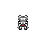
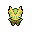

Pokédex / #352

Kecleon #352
Normal
It can freely change its body's color. The zigzag pattern on its belly doesn't change, however.
Generation 3 · Hoenn

Stats
| Attack | 90 | |
|---|---|---|
| Defense | 70 | |
| Sp. Atk | 60 | |
| Sp. Def | 120 |
In the wild
| Wild level | 40–50 |
|---|---|
| HP | 60 |
| Experience | 10 |
| Egg groups | Field |
Evolution
- Does not evolve.
Moves
| Level | Move | Type | Category | Power | Energy | Cooldown | Effect | |
|---|---|---|---|---|---|---|---|---|
| 1 | Tackle | Normal | Physical | 15 | 15 | 1s | Tackle is one of the most common and basic moves a Pokemon learns. It deals damage with no additional effects. | |
| 5 | Scratch | Normal | Physical | 40 | 40 | 6s | Scratch inflicts damage and has no secondary effect. | |
| 10 | Lick | Ghost | Physical | 30 | 30 | 5s | Lick deals damage and has a 30% chance of paralyzing the target. | |
| 15 | Faint Attack | Dark | Physical | 60 | 60 | 9s | Faint Attack deals damage and ignores changes to the Accuracy and Evasion stats. | |
| 20 | Slash | Normal | Physical | 70 | 70 | 11s | Slash deals damage and has an increased critical hit ratio. | |
| 25 | Thief | Dark | Physical | 60 | 70 | 13s | The user attacks and steals the target's held item simultaneously. The user can't steal anything if it already holds an item. | |
| 30 | Fury Swipes | Normal | Physical | 18 | 45 | 9s | Fury Swipes inflicts damage, hitting 2-5 times per use. | |
| 35 | Psybeam | Psychic | Special | 65 | 70 | 16s | Psybeam deals damage and has a 10% chance of confusing the target. | |
| 40 | Sucker Punch | Dark | Physical | 80 | 80 | 12s | Sucker Punch deals damage and has no secondary effect. | |
| 45 | Camouflage | Normal | Status | – | 90 | 60s | The user's type is changed depending on its environment, such as at water's edge, in grass, or in a cave. | |
| 50 | Shadow Claw | Ghost | Physical | 70 | 70 | 16s | The user slashes with a sharp claw made from shadows. Critical hits land more easily. | |
| 55 | Ancient Power | Rock | Special | 60 | 70 | 14s | Ancient Power inflicts damage and has a 10% chance of raising all of the user's stats by one stage. | |
| 60 | Substitute | Normal | Status | – | 200 | 120s | Creates a replacement who will take all the damage. During this the user can't use any move. | |
| 65 | Synchronoise | Psychic | Special | 120 | 130 | 27s | Using an odd shock wave, the user inflicts damage on any Pokemon of the same type in the area around it. | |
| 70 | Shadow Sneak | Ghost | Physical | 40 | 40 | 11s | Shadow Sneak deals damage and has no secondary effect. |
Field abilities
StrengthRock SmashCutFlash
Special abilities
Color Change
Egg moves
DisableDizzy PunchFake OutFoul PlayMagic CoatNasty PlotRecover
Technical machines
Aerial AceBlizzardBrick BreakDouble TeamFire BlastFlamethrowerFocus PunchIce BeamProtectRain DanceRestRock SlideRock TombShadow BallShock WaveSolar BeamSubstituteThunderThunder WaveThunderboltToxic
Drops
| Item | Amount | Chance | |
|---|---|---|---|
| bunch of wheat | 1–6 | 87.5% | |
| bitten apple | 1 | 77.8% | |
| bamboo leaves | 1–3 | 70% | |
| bamboo stick | 1–3 | 70% | |
| acorn | 1 | 46.7% | |
| cookie | 1–5 | 5% | |
| red apple | 1–5 | 5% | |
 | kecleon doll | 1 | 0.1% |
| Love Plate | 1 | 0.05% | |
| held silk scarf | 1 | 0.01% |